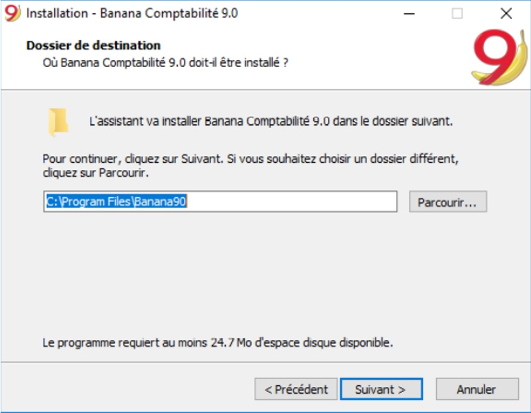
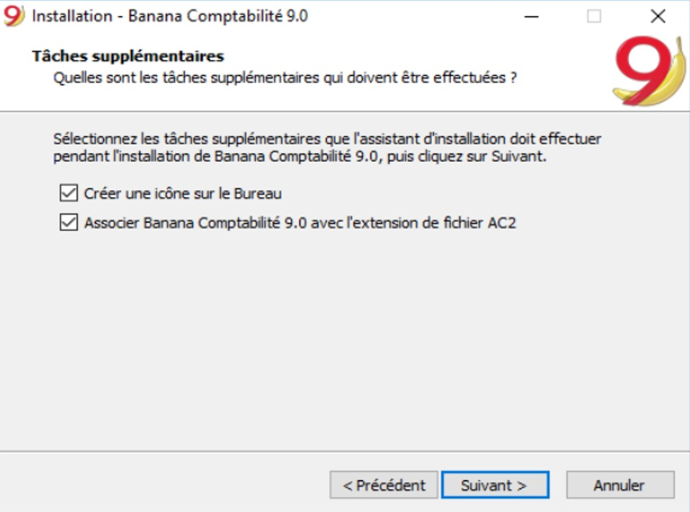
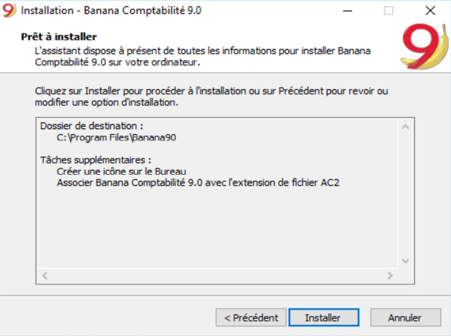
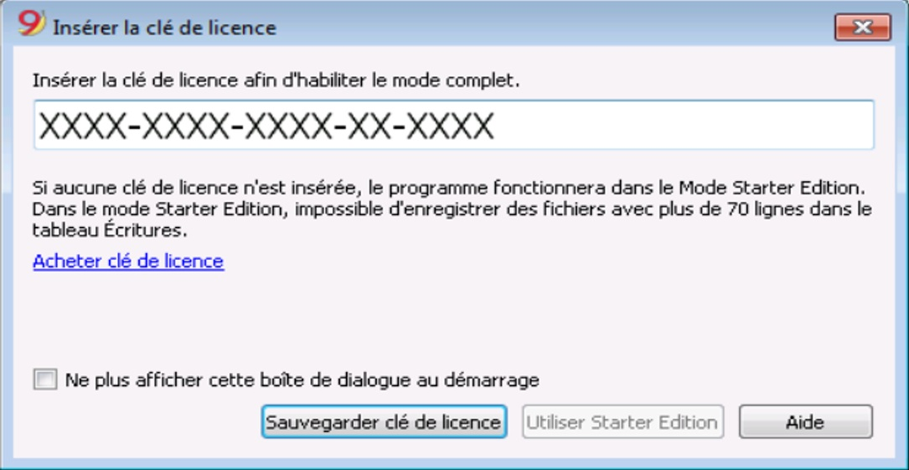
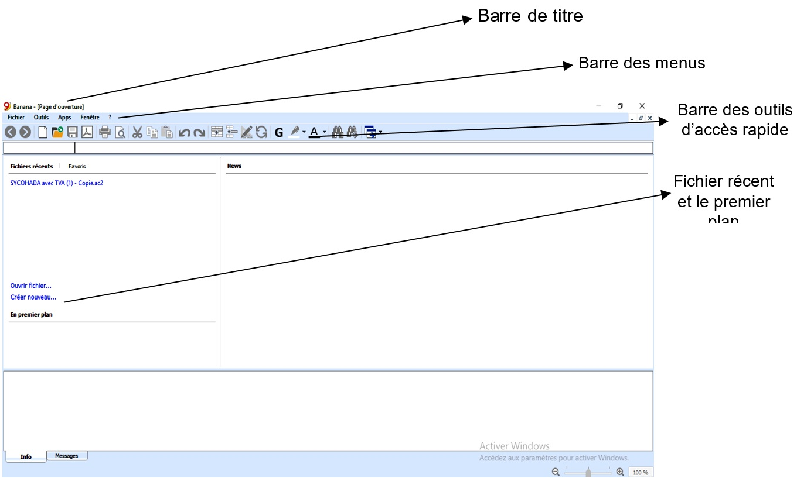
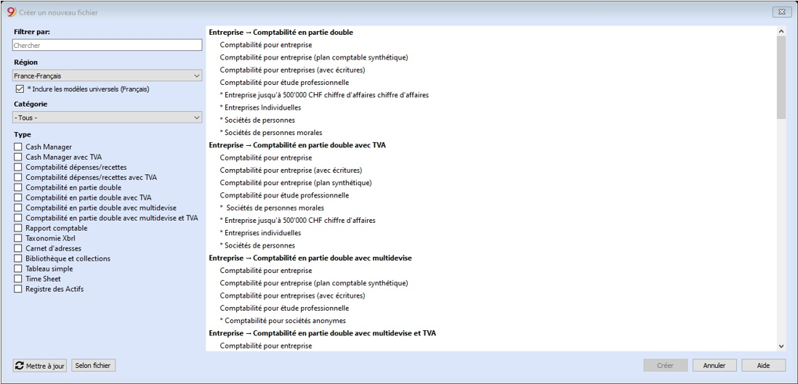
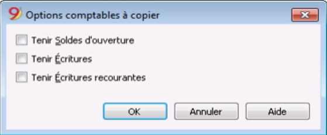
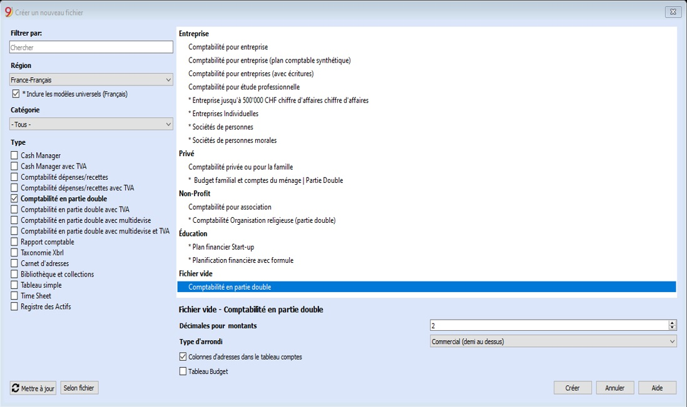
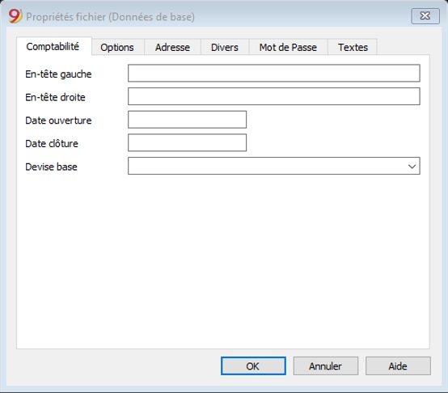
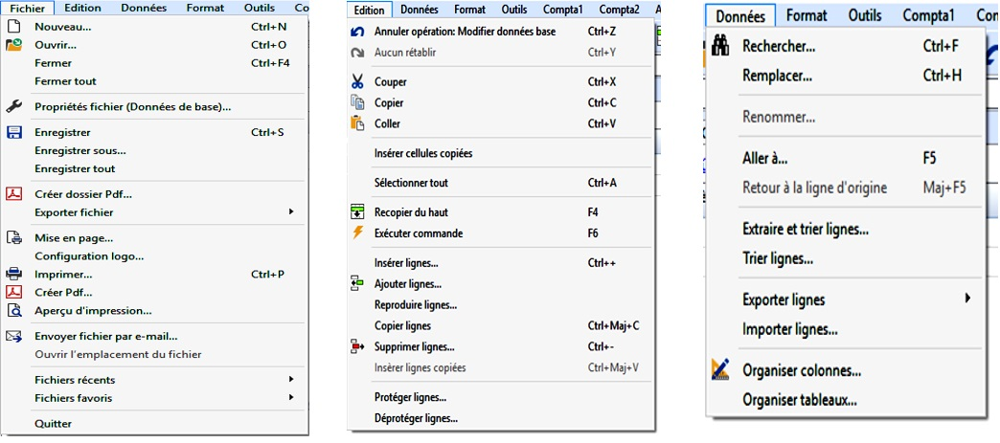

Activité 1
Author: john0001-01-01 00:00:00 +0000 UTC
Activité 1 : Approche introductive
Contenu:
A. Fiche Pédagogique
1. Objectifs spécifiques
Au terme de cette activité, le participant sera capable de :
-
Définir un logiciel comptable ;
-
Donner l’importance et les caractéristiques d’un logiciel comptable ;
-
Présenter le logiciel Banana Comptabilité.
2. Supports
-
OHADA, Acte uniforme relatif au droit comptable et à l’information financière et système comptable OHADA, YAOUNDE le 15/02/2017 ;
-
Guide d’application OHADA ;
-
EPSP, DIPROMAD, Curriculum des Humanités Techniques Commerciales, Commerciale et Gestion, Kinshasa 2014 ;
-
SERNAFOR Technique, module de formation sur le système comptable OHADA niveau 4, 2018 ;
3. Méthodes et techniques
Exposé, discussion dirigée, brainstorming et travail de groupe.
4. Durée
120 minutes
5. Déroulement de l’activité
| N° | Tâches | Méthodes et Techniques | Durée |
|---|---|---|---|
| 1 | Présenter l’activité et ses objectifs | Exposé | 5 min. |
| 2 | Définir des concepts de base : logiciel, logiciel comptable | Brainstorming | 15 min. |
| 3 | Constituer des sous-groupes pour : donner l’importance et les caractéristiques d’un logiciel comptable. Et présenter le logiciel Banana Comptabilité. | Travail en groupe | 60 min. |
| 4 | En plénière : le rapporteur de chaque sous-groupe présente la production de son équipe suivie de mise en commun avec les membres des autre sous-groupes et du facilitateur. | Discussion dirigée | 30 min. |
| 5 | Questions de synthèse
|
Discussion dirigée | 10 min. |
B. Fiche Technique
1. Définition des concepts de base
-
Logiciel : est un ensemble des programmes, procédés et règles d’un système de traitement informatique des données. Le logiciel détermine donc les tâches qui peuvent être effectuées par la machine, ordonne son fonctionnement et lui procure ainsi son utilité fonctionnelle.
-
Logiciel comptable : est un programme informatique permettant d’assurer toutes (ou presque toutes) les tâches de la comptabilité pour établir les états financiers.
Le logiciel de comptabilité est le système d’information comptable. Il peut être développé spécifiquement par l’entreprise qui l’utilise, ou il peut être acheté à un fournisseur de logiciel, ou être une combinaison d’un ou plusieurs progiciels applicatifs achetés à un fournisseur avec des adaptations locales ou spécifiques. Sa complexité et son coût sont variables en fonction de l’entreprise qui l’utilise.
2. Importance du logiciel comptable
Il enregistre et traite les transactions comptables à l’intérieur de modules fonctionnels comme la comptabilité fournisseurs, la comptabilité clients, la paie et le Grand-livre. Les logiciels comptables permettent des gains considérables de temps par l’utilisation de bases de données mises progressivement à jour par l’entreprise (liste des clients, fournisseurs, articles vendus et achetés…). Les documents comptables peuvent être modifiés et imprimés et par conséquent peuvent être diffusés plus rapidement.
3. Caractéristiques du logiciel Banana Comptabilité
Le logiciel Banana Comptabilité 9 est un logiciel qui, tout en étant simple à utiliser, offre tous les outils nécessaires pour une gestion optimale de votre comptabilité.
Il permet de (d') :
- Préparer le Livre de caisse, le Bilan et le Compte de Résultat, les Décomptes TVA et toutes les impressions fiscales conformément à la législation en vigueur.
Il est idéal pour les agents économiques (entreprises, fiduciaires, professions libérales, gérants et commerçants) ainsi que pour des associations sans but lucratif : associations, fondations, club, patriciats, copropriétés, paroisses et églises, bibliothèques, écoles ainsi que la comptabilité de la cellule familiale.
-
Obtenir facilement les états financiers avec tous les détails nécessaires et les autres documents comptables ;
-
Mettre à jour automatiquement les soldes de comptes au fur et à mesure que vous enregistrez vos mouvements. La situation de vos comptes est toujours sous contrôle ;
-
Ajouter et supprimer des comptes, modifier des descriptions, créer des sous-groupes et divers niveaux de totalisation, même pendant l’année ;
-
Contrôler des factures ouvertes et réglées ;
-
Gérer les Clients et Fournisseurs (balance âgée) ;
-
Créer les factures à envoyer à vos clients ;
-
Connaître à tout moment les factures expirées ou ouvertes ;
-
Contrôler et vérifier votre comptabilité à tout moment ;
-
Créer des simulations ;
-
Créer d’innombrables rapports, même par période ;
-
Gérer des projets, secteurs ou activités spécifiques ;
N.B : Le logiciel banana est utilisé comme Microsoft Office Excel, mais sans devoir insérer des formules.
Les graphiques ressemblent beaucoup à Excel, mais le logiciel Banana vous donne l’avantage de ne pas devoir insérer des formules. Très abordable, il vous offre aussi la possibilité de copier, couper, coller et corriger les données à tout moment.
Lorsque vous saisissez des données, les totaux de tous les tableaux sont mis à jour automatiquement. Sur la base des données insérées, Banana crée immédiatement le bilan, le compte de résultat, les relevés de TVA et de nombreux autres rapports.
4. Présentation du Logiciel Banana Comptabilité
a. Lancement du logiciel Banana Comptabilité
Comme tout autre logiciel, le lancement de Banana Comptabilité 9 requiert en amont son installation sur la machine de l’utilisateur.
Installation du logiciel Banana Comptabilité 9 sur Windows
Pour installer le programme c’est très simple, grâce à la fonction d’auto installation. En téléchargeant le programme, vous acceptez les Conditions de licence. Une fois effectué le download (téléchargement), faites un double clic sur le fichier téléchargé.

Le programme propose d’enregistrer dans le dossier C:\Program Files\Banana90. Si l’on veut enregistrer dans un autre dossier, cliquer sur le bouton Parcourir et choisir le parcours.

Par défaut, le programme est activé puis crée une icône sur le Bureau et associe Banana Comptabilité 9 avec l’extension de fichier AC2.

Cliquer sur le bouton Installer pour démarrer l’installation.
Le programme est installé dans la langue du système d’exploitation de l’ordinateur, mais la langue peut toujours être modifiée à partir du menu Outils, commande Options programme.
Après avoir ouvert le programme insérer la clé de licence et confirmer avec OK.

En insérant la clef de licence dans Banana Comptabilité, on passe de la mode de démonstration à la mode complète. Si la clef de licence n’est pas insérée, un message apparaît à l’ouverture du fichier comptable, pour avertir l’utilisateur qu’il travaille en mode Starter Edition (version d’essai gratuit limitée à 70 lignes d’écritures).
Après avoir installé le logiciel Banana Comptabilité 9 sur votre machine, il vous faudrait le démarrer pour l’utiliser :
Cliquer sur bouton Démarrer » Tous les programmes
Cliquer sur Banana Comptabilité 9.0
Il sied de signaler que lors de l’installation, l’icône du logiciel apparaît automatiquement sur le bureau de l’ordinateur de l’utilisateur. De ce qui précède, il suffit faire un double clic pour lancer le logiciel.

b. Créer un nouveau document Banana Comptabilité
Pour créer un nouveau fichier :
-
Démarrez à partir du menu Fichier ;
-
Cliquez sur Nouveau ;
-
Ou en utilisant directement la combinaison des touches (Ctrl+N).
La fenêtre qui apparaît vous donne la possibilité de créer un nouveau fichier de trois (3) façons différentes :
-
À partir d’un des modèles préconfigurés dans le site internet du logiciel (www.banana.ch/fr) ;
-
En copiant les données d'un fichier existant (lorsque vous disposez d’un fichier banana) ;
-
À partir d'un nouveau fichier vide commencez par l'un de nos modèles adaptés à votre entreprise.

- Créer un fichier à partir d’un modèle préconfiguré
Pour créer un nouveau fichier à partir d’un des modèles existants, vous devez procéder de la manière suivante :
-
Menu Fichier ; commande Nouveau ;
-
Choisissez le pays et la langue dans Région ;
-
Sélectionnez une catégorie et le type de comptabilité ;
-
Dans la liste des modèles de la boîte de dialogue, sélectionnez le modèle qui convient le mieux à vos besoins.
En cliquant sur le fichier, il s’ouvre automatiquement et peut être sauvegardé avec un nom de fichier.
Veillez au préalable à la configuration du tableau code TVA avant d’utiliser les fichiers avec options TVA. Cette configuration permettra de générer automatiquement le montant de la TVA. Le plan comptable peut être adapté à vos besoins (changer la description du compte, insérer ou supprimer des groupes, des sous-groupes, etc.).
Il existe, dans le logiciel Banana Comptabilité 9 de nombreux modèles adaptés à toutes les formes et activités juridiques. Une fois le modèle ouvert dans Banana, enregistrez le nom du fichier en cliquant sur la commande Enregistrer sous du menu Fichier :
-
Sélectionnez le dossier de destination Il peut être utile de créer un dossier séparé pour la comptabilité et différent également pour chaque année afin que vous puissiez y conserver non seulement le fichier comptable mais aussi les documents relatifs à cette année.
-
Donnez un nom au fichier contenant le nom de la société et l’exercice comptable, par exemple société_Banduki_2018. Le programme ajoute l’extension “.ac2” qui distingue les fichiers Banana.
Après avoir ouvert un des modèles préconfigurés, il faudrait généralement l’adapter en modifiant : les Propriétés du fichier (en-tête ainsi que la période comptable et l’adresse) puis procéder avec l’adaptation du Plan des comptes en insérant vos propres comptes bancaires, insérer ou modifier vos comptes selon vos exigences. Ceci peut aussi être fait par la suite, selon les besoins qui se présentent.
- Commencer à partir d’un fichier existant
Il existe plusieurs façons de copier les données :
-
Ouvrez le fichier à utiliser comme modèle à l’aide du bouton Parcourir et indiquez le chemin d’accès au fichier.
-
Créez une copie du fichier ouvert à l’aide de la commande Enregistrer sous du menu Fichier ou bien, créez une copie du fichier ouvert à partir du menu outils, tapez sur la commande Créer copie fichier, la fenêtre suivante apparaîtra, vous permettant de choisir les données à conserver. Si aucune des trois options n’est activée, un fichier est créé uniquement avec le plan comptable.

-
Enregistrer le fichier dans le dossier où vous désirez tenir les données (en général, dans le dossier Documents). Indiquer le nom de l’entreprise et l’année comptable dans le nom du fichier, par exemple “entreprise LACOM Congolaise 2020.ac2”.
-
Si vous reprenez des comptes existants, saisissez les soldes d’ouverture dans la colonne Ouverture. Si vous utilisez un système comptable multidevise, mettez à jour les taux d’ouverture.
- Commencer à partir d’un fichier vide
Comme il s’agit de commencer un fichier à partir de zéro, il est donc nécessaire de définir les données comptables de base et l’ensemble du plan comptable.
-
Menu Fichier, commande Nouveau ;
-
Cliquez sur la case Créer fichier vide ;
-
Choisissez votre langue ;
-
Sélectionner le type de système comptable (comptabilité Recettes/Dépenses, en partie double, avec ou sans TVA, avec ou sans Multidevises, ou une nouvelle parmi les divers) ;
 
-
Configurer les Paramètres pour création nouveau fichier
-
Configurer les Propriétés fichier (Données de base) en fonction des onglets ci-après :
-
Comptabilité ;
-
Options ;
-
Adresse ;
-
Divers ;
-
Mot de passe ;
-
Texte.
-
-
Enregistrer sous…. (Donner un nom) Créez la structure du plan comptable.
c. Les parties de la fenêtre Banana Comptabilité
-
Barre de titre : elle reprend le nom du logiciel et fichier à gauche et à droite, elle termine par trois bouton (réduire, agrandir et fermer) ;
-
Les menus : fichier, édition, données, outils, compta 1, compta 2, App, fenêtre.
-
Barre des outils d’accès rapide : elle reprend quelques boutons des menus qui sont indispensable pour quelques utilisations.
